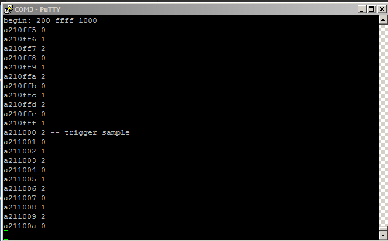

DE1-SoC
FPGA data logging
Minimal logic analyser
ECE 5760 Cornell University
Viewing the state of the FPGA
Debugging a FPGA design requires that you somehow view the internal state of the FPGA. Intel/Altera have some tools to do this
- SignalTap is a logic analyser that Quartus can build on the FPGA with your design.
SignalTap tutorial. Also see the Compile/Verify page.
- SignalProbe is a scheme for bring signals out of the FPGA with very little (or no) recompile.
Chapter 13 of Quartus Prime Handbook Vol 3
- Bus Analyser Tool Kit (beta) helps you gain visibility into your Qsys interconnect based system.
Tools > System Debugging Tools > Bus analyzer see http://www.alterawiki.com/wiki/Bus_Analyzer_Toolkit
A simple Logic Analyzer (HOmebrew Logic Analyzer -- HOLA)
I wanted to build a very light-weight data logger that could be used as a logic analyser. The FPGA footprint should be minimal and the user interface completely determined by user code running on the HPS. Only the data aquisition and transfer to the HPS is defined. The data can be displayed as a text list, plotted as traces on the VGA, or exported to a spreadsheet.
Specifications:
- About 1000 32-bit samples stored in real-time. This implies 4 M10k blocks used (one port on Qsys bus, one port in the FPGA fabric). HOLA runs at 100 MHz. Of course, you can run it slower if your design requires it.
- HOLA is reset by pushing KEY[0]. Use this only if you manage to hang the analyser.
- The number of samples taken before and after the trigger should be settable, with the sum equal to about 1000.
- All data and setup is handled by the HPS. The HPS could draw waveforms, print a few values, or use the data in any way.
- All interaction with the HPS can be simply done in the command window, or a GUI could be written.
Control/handshaking communication is via one 2-port M10K block (one port on Qsys bus, one port in the FPGA fabric).
-- addr 0 -- new data? yes==1 -- This is used to tell the logic analyser that the HPS is sending new configuration data.
-- addr 1 -- allow capture to occur -- arm the trigger
-- addr 2 -- trigger count (after trigger event)
-- addr 250 -- data capture complete == 1 -- This is used to tell the HPS that there is new logic data.
-- addr 251 -- addr_complete (sram addr of the trigger sample)
HPS sets trigger criterion -- two 32 bit words:
-- addr 254 -- dont care mask -- A "1" indicates that the bit in the match-word should be used. A "0" implies don't care in match-word
-- addr 255 -- actual match-word bits
- Two of the 32 bits routable to external pins. (not yet implemented)
- 16 bits of the data word at trigger-time is displayed on the 7-seg display.
- Flexible trigger set by the HPS.
- 32 bit trigger source word -- from the device-under-test
- 32 bit trigger match-word -- specified by HPS
- 32 bit trigger mask -- specified by HPS.
A "1" indicates that the bit in the match word should be used.
A "0" implies don't care in match word
- Trigger when (ext_trigger_source & trigger_mask) == (trigger_match_value & trigger_mask)
- Connection to the design-under-test should be minimal:
- data input word -- any 32 bits concantnated from the DUT
- trigger source word -- any 32 bits concantnated from the DUT, but will probably include part of the data input word.
- Connection to DUT is thus done in Verilog with two assign statements.
To implement this, I used three state machines running at 100 MHz:
- The state machines are reset by pushing KEY[0]. Use this only if you manage to hang the analyser.
- The data capture machine which logs one 32-bit word/cycle runs all the time. The pre-trigger data collection means that the data logging has to be continuous, one word per cycle, until the trigger event. When the trigger event occurs, it grabs a set number more samples, then signals the HPS and waits for the HPS to read the data.
- The trigger state machine just trys to set the trigger on EACH cycle. But could be extends for multistep triggers.
A trigger occures when the trigger condition is detected, and the HPS has armed the trigger.
- The control state machine gets parameters from the HPS, arms the trigger,
and when the logic samples are logged, signals the HPS to dump them, then waits.
- Total resource used was 5% of the ALM, 1% of on-board memory, and no DSP blocks (for the First implementation below).
This includes the the Qsys bus interface to the HPS, which accounts for most of the 5% of ALM. compile summary.
Chip planner, Chip planner zoom
First implementations of HOLA
The HPS code transfers parameters, then just does a simple print out of 5 samples around the trigger. The verilog is set up with the data input to the logger being a 32 bit counter running at 100 MHz. The data input the analyzer is
data_input = {count[31:0]} .
The trigger input is
ext_trigger_source={KEY[3],count[30:0]}
where KEY[3] is logic-low when pushed. If the HPS sends a trigger mask of 0h80000000, and a trigger word of 0h00000000 then the trigger will happen when the button is pushed. If the HPS sends a trigger mask of 0h0000ffff, and a trigger word of 0h00001000 then the trigger will happen when the count is 0h1000.
(HPS_code, verilog, Qsys_layout, ZIP)
A slight modification of the DUT verilog code sets up with the data input to the logger being 28 bits of a 32 bit counter running at 100 MHz, and 4 bits of counter state. The counter state merely sequences between 0,1,2 as a simple source. The data input the analyzer is
data_input = {DUT_state, count[27:0]} .
The trigger input is
ext_trigger_source={KEY[3],count[30:0]}
The HPS code is modified to parse the 32 bit data into count and state and show 10 samples before/after the trigger. The first image below shows the program output with count and state with a trigger_mask=FFFF and trigger_value=1000. The second image shows program output with trigger_mask=8000FFFF and trigger_value=1000. The data capture occured when the count low 4 digits were 1000 and the button is pushed.
(HPS_code, verilog)

Modularized version of HOLA
Rearranging the hardware to separate the logic analyser from the device-under-test makes a cleaner interface.
The functionality is unchanged, as is the Qsys layout.
There are two connections to the DUT, connections to two SRAM modules on the Qsys bus, and a clock and reset.
The formatted verilog for DUT, analyser interface, and Qsys interfaces. (Verilog)
A modified version of the HPS code prints binary as well as the hex count and the state variable. (HPS_code)
Inserting HOLA into your design
There are just a few items to change to insert HOLA into your design:
- Change the data source (data_input) to whatever signals you want to monitor.
- Change the trigger source (ext_trigger_source) to whatever the test condition requires.
- Instantiate HOLA and the signals which connect it to two Qsys memory blocks.
The exported memory block buses are connected to HOLA i/o ports.
Example of the first 3 bullets
- Export the sdram clock in Qsys (if it is not exported).
- Insert a memory block for data logging into the Qsys layout.
Choose a bus address. I used 0h1000.
Connect one port to the h2f_axi_master and export the other to the FPGA
- Insert a memory block for HOLA control into the Qsys layout. Choose a bus address
Choose a bus address. I used 0h0000.
Connect one port to the h2f_axi_master and export the other to the FPGA
Example of Qsys layout and the Qsys generated code.
- Make sure that the address defines in the HPS code match the addresses you choose.
As an example, insert HOLA into simplified version of
VGA display using a bus_master as a GPU for the HPS Display from SDRAM project from the bus-master page.
The goal is to be able to use the VGA as a graphic output for the logic analyzer.
- The bus-master, clock_bridge and sram are removed, leaving the sdram and video display hardware on the Qsys layout.
- The HPS will write to sdram for video display.
- The HOLA memories are then added at addresses 0x0800_0000 and 0x0800_1000. (Qsys_layout)
- In the Qsys interface code (from Computer_System_inst.v), make sure to remove the old bus-master, clock_bridge and sram then
add the two srams for HOLA. Also, the sdram_clk_clk is renamed.
- Insert the logic analyser code and instantiate it as before in the Verilog. (ZIP)
Logic use is now 3200 ALM (10%), 6 DSP blocks (7%), and on-chip memory is 112,384 / 4,065,280 bits (3%). (chip layout)
- Change the addresses of the HOLA memories in the HPS_code to 0xC8000000 and 0xC8001000.
Remember that 0xC0000000 is the base address of the h2f_axi_master, to which the bus offsets are added.
- The minimal HPS code clears the VGA to dark blue, and writes a message in the lower-left corner,
then drops into the main loop to read and print the HOLA data.
Adding waveform plotting to HOLA
Once the VGA interface is running, it is possible to add some graphics to HOLA. This example uses a DDS sinewave generator as the device-under-test. The clocked sine ROM adds a one cycle phase delay between the phase and the sine value. In the console image you can see the trigger condition was set to zero and masked to the low-order 8-bits. You can also see the one cycle sine delay. This mask isolates the phase value from the verilog data_input to HOLA. The data_input is parsed into 16-bits of sine and 8-bits of phase for display on the VGA. As seen below, the green line is at the trigger value of zero phase in the first image. Setting the trigger mask to 0xff and the trigger value to 0x40 produces a 90 degree phase shift at the trigger point, as seen in the second image.
(HPS_code, verilog, ZIP) (Qsys_layout)
Modularizing and simplifying the HPS interface to HOLA
To make the system easier to use for debugging, the low level functions on the HPS were abstracted to five functions:
- start_HOLA(trigger_mask, trigger_match_value) arms the capture system on the FPGA and waits for a trigger event to occur which matches the masked trigger value.
Trigger when (ext_trigger_source & trigger_mask) == (trigger_match_value & trigger_mask)
Data is returned in a 32-bit array called logic_data., The trigger position is array index 499.
Nothing is done with the data. It is up to the calling program to use the data, perhaps using one of the routines below.
- end_HOLA signals the FPGA that the HPS is done using the current data, and re-enables constant data logging.
Call this after you have stored, plotted, or analysed
the data returned.
- print_binary_HOLA(begin, end, low_bit, bit_mask, *title) prints a vector of the current data in hexidecimal and binary. Inputs:
- Number of samples before the trigger, expressed as a negative integer
- Number of samples after the trigger, expressed as positive integer
- Base position (right-most bit) of the desired field in the 32-bit word from the FPGA
- Width of the desired field, expressed as a bit-mask, e.g. 8-bits is 0xff
The vector is trimed to the length of the bit_mask, rounded up to the next 4-bits.
- Title of the data vector column, e.g. char title_s[]="sine"
- print_HOLA(begin, end, low_bit, bit_mask, un/sign, *format, *title) prints a vector on the console. Inputs:
- Number of samples before the trigger, expressed as a negative integer
- Number of samples after the trigger, expressed as positive integer
- Base position (right-most bit) of the desired field in the 32-bit word from the FPGA
- Width of the desired field, expressed as a bit-mask, e.g. 8-bits is 0xff
- Signed/unsigned 'u' implies unsigned, 's' implies signed
- A printf format string, e.g. char fmt_s[]="%03d %d " , where the %03d formats the clock tick number and %d is the desired format for the data vector
- Title of the data vector column, e.g. char title_s[]="sine"
- draw_wave_HOLA(low_bit, bit_mask, sign, v_pos, v_scale, h_scale, color) draws a time-series vector on the VGA display.
- Base position (right-most bit) of the desired field in the 32-bit word from the FPGA
- Width of the desired field, expressed as a bit-mask, e.g. 8-bits is 0xff
- Signed/unsigned 'u' implies unsigned, 's' implies signed
- Vertical position on the screen
- Vertical scale represented as powers of two: A value of 2 means right-shift 2 bits; A value of -1 means left-shift 1 bit
- Pixels/sample clock (hoizontal scale) can be 0,1,2,3,4: A value of 3 means 8 pixels/clock cycle
- Color of the waveform. 8-bit colors are defined near the top of the program.
The code for many applications will just call the start routine, plot some data, and end. The example queries for a trigger_mask, trigger_value, and zoom factor, the plots the phase of a DDS system, the individual bits of the phase, and the resulting sinewave. Two zoom levels are shown below. Zoom level 0 plots 1 pixel/horizontal pixel. Zoom level 2 plots 4 pixels/horizontal pixel. The phase and sine vectors are also printed.
(HPS_code, Verilog and zip is same as above)
(HPS_code with binary print)
As a template for testing the lab_1 ODE solver, this example plots four waveforms and the bit-wise expansion of one of the waveforms. The device-under-test (DUT) was a 3-phase DDS sinewave generator. Connections from the DUT to HOLA consisted of a data word and a trigger word. Phase angle and the phase bits are plotted in red, while the three phase sine waves are plotted in white, yellow, and cyan.
--
The first image has a trigger mask of 0x80000000 and trigger value of zero, so refering back to the connections, a trigger will occur when KEY3 is pushed.
--
The second image trigger mask is 0xff, which are the bits of the phase in the trigger word and a trigger value of zero. (Verilog, ZIP, C code)
-- A slightly modified DUT includes a DDS reset line from KEY[1], which is included in the external_trigger_source. If you now choose a trigger_mask of 0x40000000 and trigger_match_value of 0x40000000 in the C code, then when you press the KEY[1] DUT reset you get the third image. The phase stays at zero after the trigger because there is no way to remove your finger from the button in 5 microseconds. (Verilog)(Qsys_layout)


Adding table file write to HOLA
Using LINUX file-redirect it is easy to set up a utility that either prints a table to the terminal or saves it in a file. The utility allows you to format individual entries to produce a CSV or tabbed table. The routine print_table_HOLA outputs to stderr. By default the device stderr is the console screen. At the command line when you start the analysis program you can redirect stderr to a file using ./executable_name 2>file_name. Using ./la10 2>test.txt the table shown in the screen dump below is now in a file. The formatting code for the table gives the details of how to parse the logic_data vector read from the FPGA. The range of the sine functions is +/-63 because the verilog ROM table does not use the upper bit of the 16 bit table. The code uses the same Verilog as the example just above. (C code)
Adding real-time GPIO pin output for oscilloscope
Two multiplexers were added to the verilog design to allow real-time monotoring of two bits of the logic analyser data input word. The two bits are output on two GPIO_0 pins so you can hook up a scope. The the ALM use count is 4440, about 14% of the FPGA. Each mux uses about 13 ALMs. The HPS code and Qsys are unchanged (Verilog).
Below you can see a black jumper hooked to GPIO0_0 and a white jumper hooked to GPIO0_1. The top switches [10:5] chose bit 13 for channel 1 and switches [4:0] chose bit 14 for channel 2. The ringing on channel 1 is due to a misplaced ground connection. The screw-head in the lower right gives the better quality signal on channel 2.
{kind=link}
{kind=link}
{kind=link}
{kind=link}
{kind=link}
{kind=link}
{kind=link}
{kind=link}
{kind=link}
{kind=link}
{kind=link}
{kind=link}
{kind=link}
{kind=link}
{kind=link}
{kind=link}
{kind=link}
{kind=link}
{kind=link}
{kind=link}
{kind=link}
{kind=link}
{kind=link}
{kind=link}
{kind=link}
{kind=link}
{kind=link}
{kind=link}
{kind=link}
{kind=link}
{kind=link}
{kind=link}
{kind=link}
{kind=link}
{kind=link}
{kind=link}
{kind=link}